| Задание N3 | |||||||||||
| Multithreading |
|||||||||||
| Дано: Следующий game loop:
|
|||||||||||
 |
Примечания и пояснения к схеме:
Замечания:
|
||||||||||
| Необходимо: Предложить способ распараллеливания данного цикла на несколько независимых threads в виде схемы с указанием всех необходимых для этого семафоров, таймеров и ключевых частей кода.
|
|||||||||||
Text and images are (c) 1997 by Snowball Interactive Entertainment, Inc. All rights reserved. |
|||||||||||